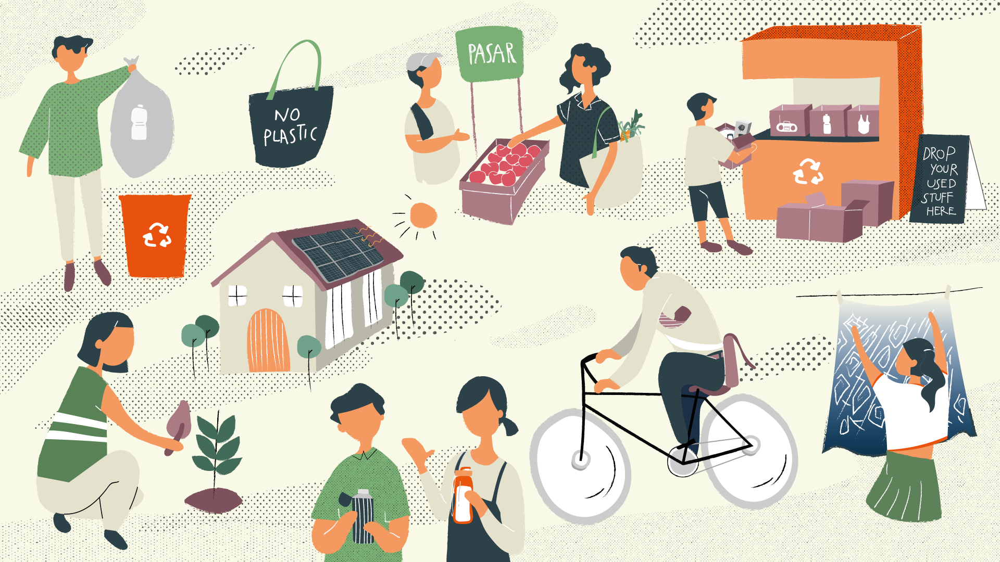

Gaya hidup ramah lingkungan kini semakin relevan di tengah tantangan global seperti perubahan iklim, polusi, dan penurunan kualitas lingkungan. Penting bagi kita untuk mulai mengambil langkah-langkah kecil yang dapat membawa perubahan besar. "Gaya Hidup Ramah Lingkungan: Langkah Kecil untuk Perubahan Besar," hadir untuk memberikan wawasan dan inspirasi bagi pembaca dalam mengadopsi kebiasaan yang lebih berkelanjutan dalam kehidupan sehari-hari.
Dalam menghadapi tantangan lingkungan, banyak yang berpendapat bahwa perubahan signifikan hanya bisa dicapai melalui tindakan besar dari pemerintah dan perusahaan. Namun, kontribusi individu juga sangat penting dan tidak boleh diabaikan. Langkah-langkah kecil seperti mengurangi penggunaan plastik, menghemat energi di rumah, dan memilih transportasi ramah lingkungan dapat membuat perbedaan yang berarti jika dilakukan secara kolektif. Ini akan menguraikan cara-cara praktis yang bisa diterapkan oleh setiap orang untuk berkontribusi terhadap kelestarian lingkungan.
Salah satu langkah awal yang bisa dilakukan adalah mengurangi penggunaan plastik sekali pakai. Plastik yang sulit terurai menjadi salah satu ancaman terbesar bagi ekosistem laut dan darat. Dengan membawa tas belanja sendiri, menggunakan botol minum yang dapat diisi ulang, dan memilih produk dengan kemasan minimal, kita bisa mengurangi jumlah sampah plastik yang berakhir di tempat pembuangan sampah dan lautan. Langkah-langkah ini tidak hanya sederhana tetapi juga sangat efektif dalam mengurangi jejak ekologis kita.
Pola makan berkelanjutan adalah aspek lain yang dapat membantu mengurangi dampak lingkungan. Mengurangi konsumsi daging dan produk hewani, serta memilih makanan yang diproduksi secara lokal dan musiman, dapat mengurangi jejak karbon dari industri makanan. Menanam sayuran sendiri di rumah atau berpartisipasi dalam komunitas pertanian lokal juga dapat mendukung praktik pertanian yang lebih berkelanjutan dan ramah lingkungan. Dengan mengadopsi pola makan yang lebih berkelanjutan, kita tidak hanya mendukung kesehatan pribadi tetapi juga kesehatan planet ini.
Setiap individu memiliki peran penting dalam menjaga kelestarian lingkungan. Langkah-langkah kecil yang kita ambil hari ini, jika dilakukan secara kolektif, dapat membawa perubahan besar untuk masa depan. Mulailah dengan tindakan sederhana yang bisa Anda lakukan sehari-hari, seperti mengurangi penggunaan plastik, menghemat energi, memilih transportasi yang lebih ramah lingkungan, dan mengadopsi pola makan berkelanjutan. Dengan kesadaran dan komitmen, kita bisa membuat perbedaan nyata. Mari bersama-sama menjaga bumi kita demi generasi mendatang.
